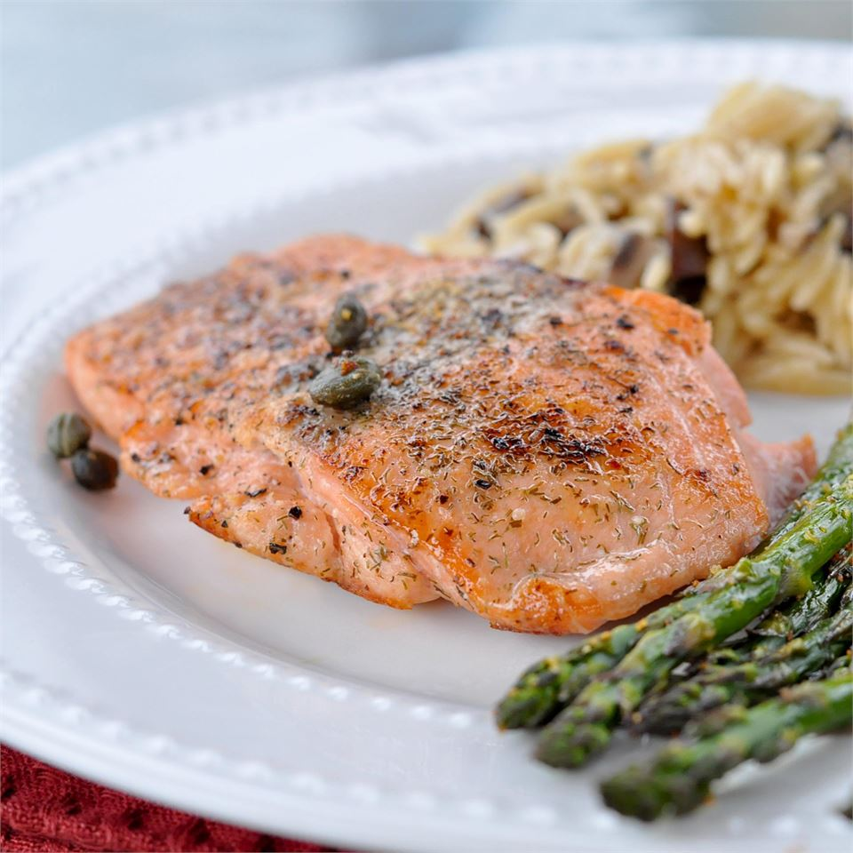

Pan Seared Salmon

Description
Simply seasoned with salt and pepper, these salmon fillets are pan seared with capers,
and garnished with slices of lemon.
Ingredients
- 4 (6 ounce) fillets salmon
- 2 tablespoons olive oil
- 2 tablespoons capers
- 1/8 teaspoon salt
- 1/8 teaspoon ground black pepper
- 4 slices lemon
Steps
-
Preheat a large heavy skillet over medium heat for 3 minutes.
-
Coat salmon with olive oil. Place in skillet, and increase heat to high. Cook for 3
minutes. Sprinkle with capers, and salt and pepper. Turn salmon over, and cook for
5 minutes, or until browned. Salmon is done when it flakes easily with a fork.
-
Transfer salmon to individual plates, and garnish with lemon slices.